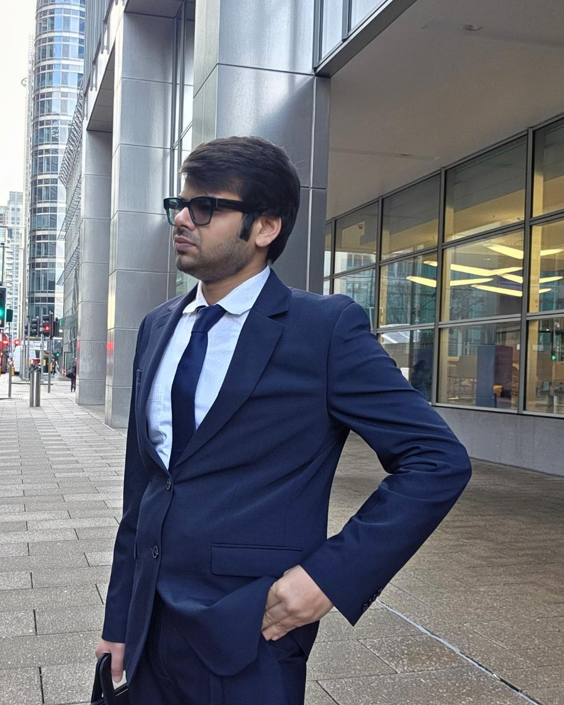

About
Machine learning people can actually trust.
I'm a data scientist based in Bath, UK. I moved from India to England in 2023 to study for my Master's at Sheffield Hallam University, after a B.Tech in Computer Science at Amity University.
I like the part of machine learning where messy, sensitive, real-world data meets real decisions. I care about explainable models, clear data lineage, and pipelines that keep running after the demo.

Quick facts
- Based in Bath, UK
- MSc, Sheffield Hallam University
- B.Tech Computer Science, Amity University
- Works across Python, SQL and Azure
Skills
What I work with
Predictive modelling
Risk scoring, deterioration detection and demand forecasting.
Data engineering
End-to-end ML pipelines with CI/CD, so models keep running after launch.
LLM solutions
Prompt design and validation, plus retrieval-augmented generation over documents.
Governance and trust
Explainable outputs, data lineage and model governance on sensitive public-sector data.
Experience
Where I've worked
Data Scientist, Somerset Council
- Leading a risk prioritisation tool for Adult Social Care: waiting list ranking, deterioration detection and demand forecasting.
- Using Azure OpenAI in a governed environment to pull structured indicators from free-text case notes, with prompts validated so results are consistent and explainable.
- Data scientist on placement forecasting for Children's Services to support financial planning.
Data Specialist (placement), Wessex Water
- Leakage detection using network flow and pressure data.
- River water quality analysis.
- Data pipelines on Azure.
Projects
Things I've built
Knowledge-graph RAG over scientific papers
A pipeline that reads scientific paper images, builds a knowledge graph from them, and answers questions with evidence. Built against a timed challenge deadline.
0.97 vs 0.53
mean evidence recall, graph-enhanced vs baseline, on a 10-question test.
Medical Recommendation System
A web app that takes reported symptoms and health data and suggests likely conditions and personalised recommendations. It mixes machine learning with rule-based logic, built end to end and deployed on Heroku.